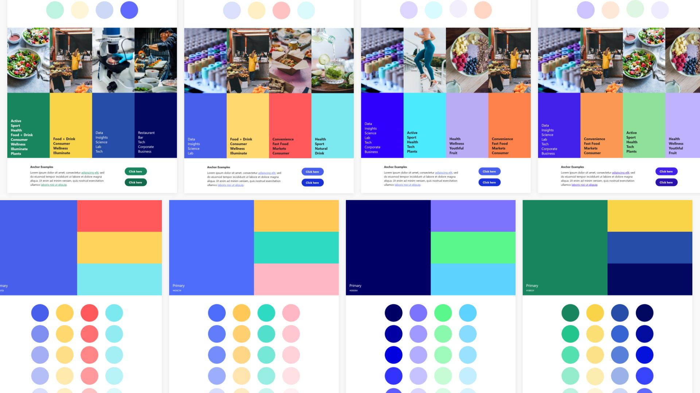
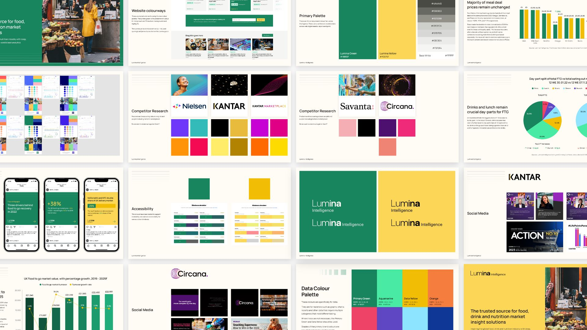
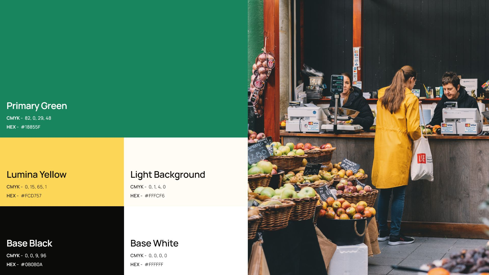
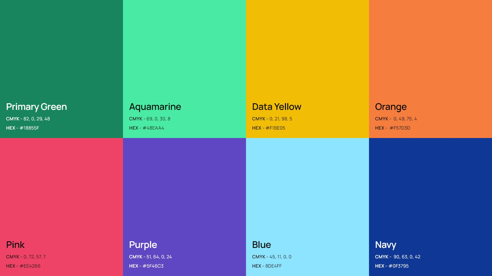
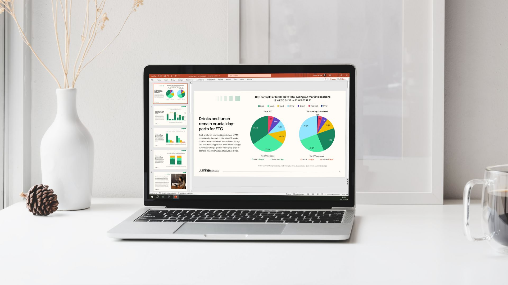
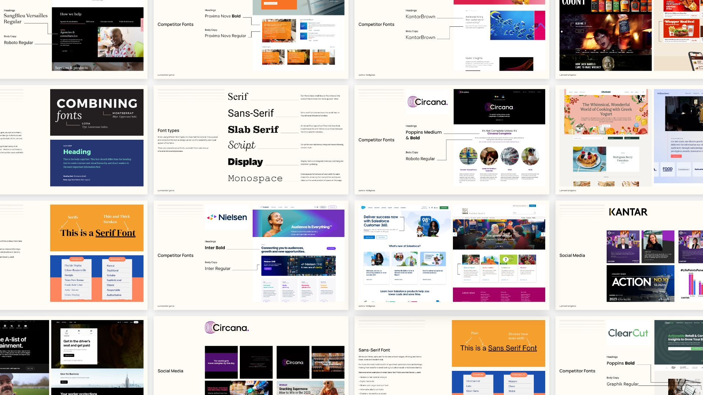
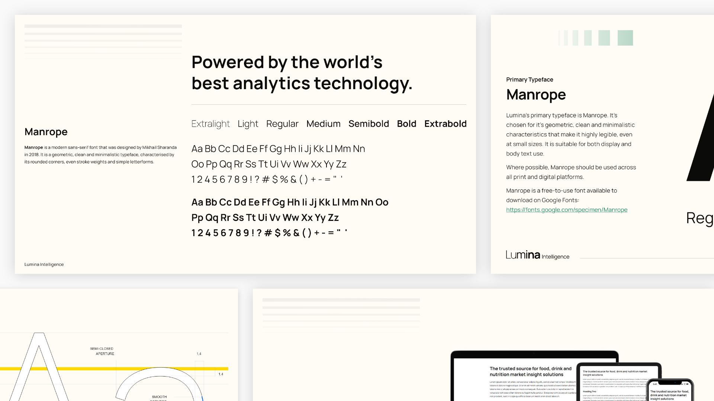
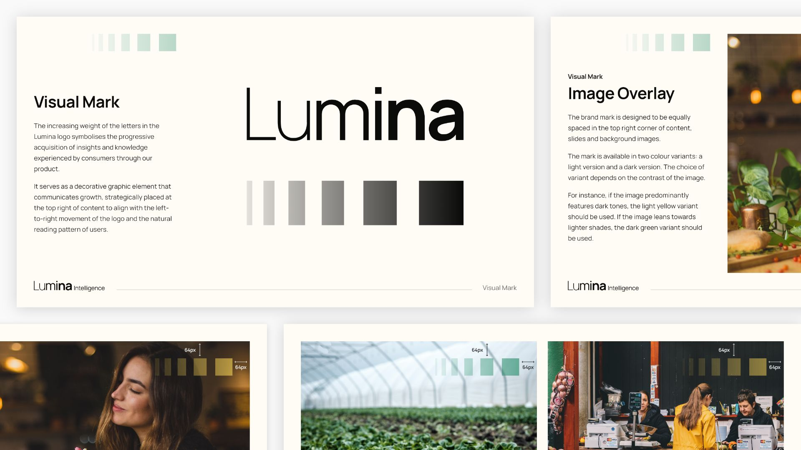

The Brief
Lumina Intelligence, operating as an insight specialist in the food, drink, and nutrition industries under the B2B brand William Reed, tased me with the challenge to refresh their current branding.
The goal was to inject a bright, contemporary feel into their identity while establishing cross-brand consistency and ensuring longevity. The new design needed to stand out in the competitive landscape and resonate with both the food and drink market audience and the nutritional science community.
Colour Palette
Collaborating with the teams under the Lumina Intelligence brand, I conducted extensive research on their competitors, delving into the colours and themes prevalent in these diverse markets.
Presenting my findings to the teams, we worked together to narrow down a colour palette that not only reflected the essence of both markets but also met the unique needs of the brands.
Colour Research
 Primary Colour Palette
Data Colour Palette
With the rollout of the new color palette, I went a step further by creating a data palette. This additional palette was designed for use in presentations, charts, and data, with a keen focus on color contrast accessibility. The result? Enhanced inclusivity and readability across Lumina Intelligence's diverse product range..
 Fonts
For the brand refresh, the team sought a clean, highly legible, and contemporary font that aligned with the current Lumina Intelligence logo and could grow with the brand.
Font Research
Recognising the importance of flexibility in font usage, especially in external communications with clients, I explored both Serif and Sans Serif options.
Manrope Font
After thorough research on competitors and market-leading brands, I compiled my findings into a presentation and zeroed in on the versatile font, Manrope. Its high legibility across devices and in print made it perfect for Lumina Intelligence's data-led products and interfaces.
Logos
Despite the desire for a fresh look, the brand was adamant about retaining their current logo, considering it a fitting representation of their core message. To meet this need, I recreated the logos in the Manrope font, ensuring a seamless transition while maintaining the essence of the brand.
Visual Mark
Recognising the need for a consistent visual mark, I worked with the teams to develop one that aligned with Lumina Intelligence's messaging of insight and growth. This mark, designed to be versatile across various branding materials, strikes the right balance and makes a visual impact without being overly conspicuous.
The result is a revitalised Lumina Intelligence brand characterised by a vibrant colour palette, enhanced accessibility, a versatile font choice, and a cohesive visual identity that aligns seamlessly with the brand's core values.